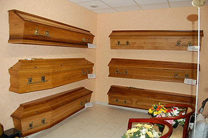
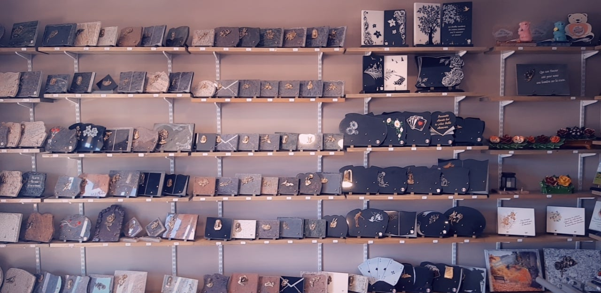
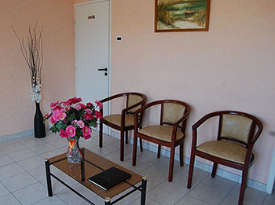
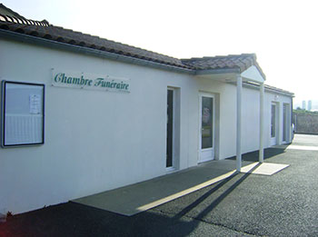
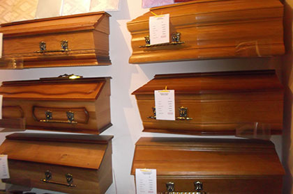
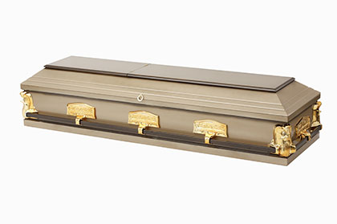
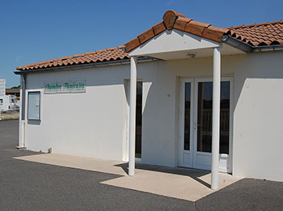
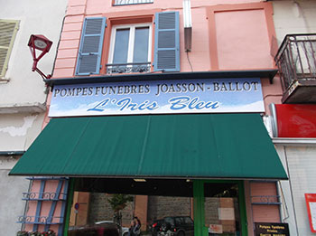

Pompes funèbres
Les Pompes Funèbres Joasson mettent à votre disposition les compétences de leur atelier de menuiserie : le cercueil est personnalisé selon vos souhaits.
L’atelier →Votre spécialiste des obsèques vous accompagne dans toutes les démarches liées à des funérailles.
Suite au décès de M. Paul Joasson, Jordan Desmules, présent dans l’entreprise depuis 6 ans, est désormais le nouveau gérant.
Indiquez où le décès a eu lieu et l’agence la plus proche : la liste des démarches s’adapte, avec ce que les Pompes Funèbres Joasson prennent en charge pour vous. Cochez au fur et à mesure, la liste reste enregistrée sur ce téléphone.
Repères généraux, à confirmer avec votre conseiller. Délai des obsèques : entre 24 heures et 14 jours calendaires après le décès (décret n° 2024-790 du 10 juillet 2024).
Fabrication de cercueils, transport de corps, soins de conservation, démarches administratives, contrat obsèques, fleurs, funérarium, crémation, fosses, caveaux et monuments.

Les Pompes Funèbres Joasson mettent à votre disposition les compétences de leur atelier de menuiserie : le cercueil est personnalisé selon vos souhaits.
L’atelier →Un vaste choix d’urnes et de monuments cinéraires. Dispersion des cendres au Jardin du Souvenir, dans le caveau familial ou au columbarium.
Démarches →
Monuments, pierres tombales, caveaux. Gravure et ajout de photos en porcelaine.
Demander un devis →Vous habitez loin ? Entretien de tombe et fleurissement à la Toussaint : la sépulture est nettoyée, fleurie.
Nous écrire →Soins de conservation. Transport avant et après la mise en bière, sur toutes distances.
Nous appeler →
Anticiper ses funérailles pour décharger ses proches : choix du cercueil, dernières volontés, déroulé de la cérémonie.
Préparer mes volontés →
Les Pompes Funèbres Joasson mettent à votre disposition les compétences de leur atelier de menuiserie. Le cercueil sera personnalisé selon vos souhaits.



Venez vous recueillir auprès du défunt dans la chambre funéraire avant le jour des obsèques.
Les conseillers funéraires vous aident à anticiper vos funérailles afin de décharger vos proches de cette douloureuse tâche. Notez vos premières intentions ici, puis transmettez-les pour un rendez-vous.
Rien n’est envoyé sans votre accord : le bouton ouvre simplement votre messagerie avec ce récapitulatif.

Un très vaste choix d’articles funéraires et de fleurs, en magasin à Cours-la-Ville, Chauffailles et Charlieu.
La fleuriste présente à Cours-la-Ville crée gerbes, couronnes, dessus de cercueil et devants de tombe. Livraison de fleurs à la chambre funéraire.
Consultez les avis de décès publiés par les Pompes Funèbres Joasson et laissez un message de condoléances.
Les Pompes Funèbres Joasson vous proposent leurs services sur l’ensemble de la Saône-et-Loire (71) et du Rhône (69), depuis leurs adresses de Charlieu (42), Chauffailles, Coublanc et Cours-la-Ville.
Par mail : contact@pompesfunebres-joasson.fr